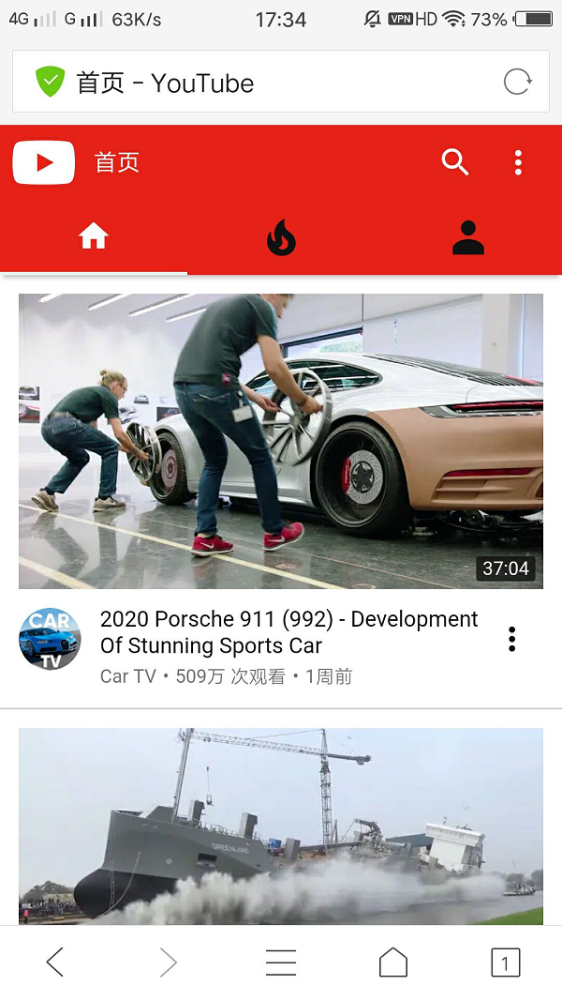

以下是安卓加速器教程
因商品特殊性，购买后请务必加群，或者加Q客服3230422520
购买后请务必加售后QQ群号218499627,群公告有月/季/年卡续费连接
安装之后，去复制淘宝发你的ssr开头的6条连接（先复制不用管黏贴到哪里）
2.返回桌面打开SSR软件，点击左上角ShadowsocksR
3.出来的配置文件界面点击右下角加号键+，从剪贴板导入
出来的界面顶部确定
确定后选择界面顶端的闪电符号可以测试服务器延迟，数值小的速度快些
选中第二个后出来的界面上滑，找到功能设置。一般常用的模式有【全局】【绕过局域网和大陆】，建议选【绕过局域网和大陆】
出来的界面点一下右上角的这个小飞机符号，让他变成没有斜线的状态，才是软件开启状态
就会有数据了
这时候就可以去浏览器里打开google或者youtube，能正常打开就是翻墙成功了

有任何问题请加QQ群，联系群主都会得到解决：群号218499627